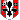

260210 - Mirodek Euridas Dareh Reginald - Fossa di Necromunda
21:42 Mirodek
Mirodek
Mirodek 
[Bassifondi] [Si arresta a pochi passi dall’ingresso della Fossa piantando i piedi nel fango proprio davanti al Drago e a Dareh. Le ombre del suo mantello nero danzano seguendo il fumo del sigarello mentre si volta a guardarli con una serietà professionale che non ammette repliche. La sfrontatezza è ancora lì ma ora è piegata a una cautela necessaria per sopravvivere a quel posto] Signori, non è un posto per tutti. Qui vige la regola di Reg, fate come vi dico e usciremo con le nostre gambe. [Sposta lo sguardo su Euridas studiando per un istante l'aura di potere che l'uomo emana naturalmente. Solleva una mano e la agita a mezz'aria come a voler scacciare un fumo troppo denso cercando di spiegare l'inspiegabile] Drago, mi raccomando... sii meno... Drago. [Si gira verso il mendicante sdentato che sorveglia l'accesso con occhi torbidi. Il suo tono cambia diventando quello di chi conosce ogni codice della strada] Sdentato, facci entrare. Sono stato convocato da Reginald. Sono Mirodek. [Tende l'orecchio verso l'interno catturando il timbro della voce di Reginald che risuona oltre la pesante porta. Un lampo di divertimento gli attraversa il volto spigoloso] Ottimo, è di buonumore!Il vecchio sorride e bussa alla porta, 4 colpi, poi 3 poi ancora 4 e la porta si apre
21:46 Euridas
Euridas  [Bassifondi] Meno Drago posso. Meno elfo...meno. [Indicando le orecchie. Poi nota come Mirodek si rivolge a sdentato ed i colpi che il vecchio da alla porta. Quattro, tre, quattro. Registra ogni cosa, ma resta in silenzio, al fianco di Mirodek. Uno sguardo a Dareh, annuendogli piano, prima di tornare a guardare dritto dinanzi a se l'uscio che si apre.] Se dobbiamo ballare....balliamo. [Mormora, verso Mirodek. Camiciola nera all'interno della quale si nasconde la coda di cavallo, fascia in vita, pantaloni neri e stivalacci a punta dello stesso colore. Questo l'abbigliamento completo dell'elfo, che non nasconde con quell'acconciatura le proprie orecchie a punta.]
[Bassifondi] Meno Drago posso. Meno elfo...meno. [Indicando le orecchie. Poi nota come Mirodek si rivolge a sdentato ed i colpi che il vecchio da alla porta. Quattro, tre, quattro. Registra ogni cosa, ma resta in silenzio, al fianco di Mirodek. Uno sguardo a Dareh, annuendogli piano, prima di tornare a guardare dritto dinanzi a se l'uscio che si apre.] Se dobbiamo ballare....balliamo. [Mormora, verso Mirodek. Camiciola nera all'interno della quale si nasconde la coda di cavallo, fascia in vita, pantaloni neri e stivalacci a punta dello stesso colore. Questo l'abbigliamento completo dell'elfo, che non nasconde con quell'acconciatura le proprie orecchie a punta.]
Euridas [Bassifondi] Meno Drago posso. Meno elfo...meno. [Indicando le orecchie. Poi nota come Mirodek si rivolge a sdentato ed i colpi che il vecchio da alla porta. Quattro, tre, quattro. Registra ogni cosa, ma resta in silenzio, al fianco di Mirodek. Uno sguardo a Dareh, annuendogli piano, prima di tornare a guardare dritto dinanzi a se l'uscio che si apre.] Se dobbiamo ballare....balliamo. [Mormora, verso Mirodek. Camiciola nera all'interno della quale si nasconde la coda di cavallo, fascia in vita, pantaloni neri e stivalacci a punta dello stesso colore. Questo l'abbigliamento completo dell'elfo, che non nasconde con quell'acconciatura le proprie orecchie a punta.]21:51 Dareh [Bassifondi] Resta un passo indietro quando la porta si apre. Il volto rimane impassibile, segnato solo da una lieve tensione attorno agli occhi chiari. Quando Mirodek prende il comando ed il Drago Nero annuisce, lui inclina appena il capo in risposta a Euridas. Un gesto minimo, sufficiente. Avanza infine insieme agli altri, varcando la soglia senza esitazione né curiosità ostentata. Il cappotto scuro ricade ordinato sulle spalle, un abbigliamento anormale per un uomo del suo rango, ma studiato ad hoc per non raccontare nulla di lui.
21:54Reginald  [Fossa di Ferro] [dietro la porta appare un uomo alto, con una cicatrice che gli attraversa l’occhio sinistro, chiuso, un sigaro all’angolo della bocca, un fisico da lottatore e una pancia da alcolizzato] Avanti cosa aspettate datevi una mossa [li accoglie sbraitando]
[Fossa di Ferro] [dietro la porta appare un uomo alto, con una cicatrice che gli attraversa l’occhio sinistro, chiuso, un sigaro all’angolo della bocca, un fisico da lottatore e una pancia da alcolizzato] Avanti cosa aspettate datevi una mossa [li accoglie sbraitando]
Reginald [Fossa di Ferro] [dietro la porta appare un uomo alto, con una cicatrice che gli attraversa l’occhio sinistro, chiuso, un sigaro all’angolo della bocca, un fisico da lottatore e una pancia da alcolizzato] Avanti cosa aspettate datevi una mossa [li accoglie sbraitando]21:58Mirodek [Fossa di Ferro] [Rivolge un sorriso di rimando allo sdentato prima di piantare lo sguardo in quello di Euridas] Balleremo, ci puoi scommettere [Un lampo di fuoco gli accende le pupille mentre varca la soglia con la sicurezza di chi ha già puntato la vita su lanci di dadi peggiori. Si ferma davanti a Reginald squadrando con un’occhiata divertita la sua pancia prominente e quella dentatura ingiallita che brilla nella penombra come oro vecchio] Zio Reg, sei veramente in forma [Accenna col capo verso i due uomini alle sue spalle mantenendo un’aria sciolta] Ho portato degli amici. Lui è Sadir [indicando Euridas] e l'altro è Martino. Ci aiuteranno a capire che fine ha fatto il secco. [Avanza ancora di un passo riducendo la distanza e gli appoggia una mano pesante sulla spalla in un gesto di confidenza brutale] sono persone fidate
Mirodek [Fossa di Ferro] [Rivolge un sorriso di rimando allo sdentato prima di piantare lo sguardo in quello di Euridas] Balleremo, ci puoi scommettere [Un lampo di fuoco gli accende le pupille mentre varca la soglia con la sicurezza di chi ha già puntato la vita su lanci di dadi peggiori. Si ferma davanti a Reginald squadrando con un’occhiata divertita la sua pancia prominente e quella dentatura ingiallita che brilla nella penombra come oro vecchio] Zio Reg, sei veramente in forma [Accenna col capo verso i due uomini alle sue spalle mantenendo un’aria sciolta] Ho portato degli amici. Lui è Sadir [indicando Euridas] e l'altro è Martino. Ci aiuteranno a capire che fine ha fatto il secco. [Avanza ancora di un passo riducendo la distanza e gli appoggia una mano pesante sulla spalla in un gesto di confidenza brutale] sono persone fidate22:04Euridas [Bassifondi] [Ascolta Mirodek con attenzione, registrando il proprio nome. Se potesse parlare, direbbe "Sadir? Con tutto il tempo per trovarmi un nome, proprio Sadir? Ad un elfo? Vabbe', a Martino e' andata peggio." Ma no. Lui e' il Drago Nero. E' abituato agli imprevisti e quindi non tentenna. E non bestemmia. Resta impassibile, rivolgendo semplicemente un cenno del capo verso Reginald, lasciando che gli occhi poi siano l'unica cosa che si muove velocemente per cogliere ogni piccolo particolare dell'uomo.]
Euridas [Bassifondi] [Ascolta Mirodek con attenzione, registrando il proprio nome. Se potesse parlare, direbbe "Sadir? Con tutto il tempo per trovarmi un nome, proprio Sadir? Ad un elfo? Vabbe', a Martino e' andata peggio." Ma no. Lui e' il Drago Nero. E' abituato agli imprevisti e quindi non tentenna. E non bestemmia. Resta impassibile, rivolgendo semplicemente un cenno del capo verso Reginald, lasciando che gli occhi poi siano l'unica cosa che si muove velocemente per cogliere ogni piccolo particolare dell'uomo.]22:08Dareh  [Fossa di Ferro] Non reagisce quando sente il nome. O almeno, non in modo evidente. Un battito di ciglia appena più lento degli altri segna l’unica concessione all’imprevisto. “Martino” scivola addosso come un vestito preso in prestito: non gli appartiene, ma per ora lo indossa. Fa un passo avanti, quel tanto che basta a essere incluso nella presentazione senza rubarne il centro. Il capo si inclina in un cenno essenziale verso Reginald, neutro, privo di sfida come di deferenza. «Martino» conferma semplicemente, con voce bassa e piana. Lo sguardo resta fermo sull’uomo dalla cicatrice, non insistente, non sfuggente. Le mani restano visibili lungo i fianchi, aperte, senza mostrare nulla che possa essere letto come minaccia.
[Fossa di Ferro] Non reagisce quando sente il nome. O almeno, non in modo evidente. Un battito di ciglia appena più lento degli altri segna l’unica concessione all’imprevisto. “Martino” scivola addosso come un vestito preso in prestito: non gli appartiene, ma per ora lo indossa. Fa un passo avanti, quel tanto che basta a essere incluso nella presentazione senza rubarne il centro. Il capo si inclina in un cenno essenziale verso Reginald, neutro, privo di sfida come di deferenza. «Martino» conferma semplicemente, con voce bassa e piana. Lo sguardo resta fermo sull’uomo dalla cicatrice, non insistente, non sfuggente. Le mani restano visibili lungo i fianchi, aperte, senza mostrare nulla che possa essere letto come minaccia.
Dareh [Fossa di Ferro] Non reagisce quando sente il nome. O almeno, non in modo evidente. Un battito di ciglia appena più lento degli altri segna l’unica concessione all’imprevisto. “Martino” scivola addosso come un vestito preso in prestito: non gli appartiene, ma per ora lo indossa. Fa un passo avanti, quel tanto che basta a essere incluso nella presentazione senza rubarne il centro. Il capo si inclina in un cenno essenziale verso Reginald, neutro, privo di sfida come di deferenza. «Martino» conferma semplicemente, con voce bassa e piana. Lo sguardo resta fermo sull’uomo dalla cicatrice, non insistente, non sfuggente. Le mani restano visibili lungo i fianchi, aperte, senza mostrare nulla che possa essere letto come minaccia.22:08Reginald [Fossa di Ferro] [si volta, circondato da cinque dei suoi, passa il sigaro dal lato destro a quello sinistro della bocca, sputa per terra] Porco Astendar pensavi fosse un appuntamento? Datti una mossa [saluta il rosso, un ghigno gli appare in viso mentre fissa l’unico occhio sui due draghi squadrando prima Euridas e poi Dareh] Sadir e Martino… sì e io sono Calindra la puttana dei Bassifondi [ replica sarcastico facendo un cenno a uno dei suoi] Il primo che sgarra finisce dentro la gabbia [indica le scale unica cosa visibile nella stanza desolata e fa cenno al Carnefice di fare strada] la strada la conosci Stallone [ride sguaiato]
Reginald [Fossa di Ferro] [si volta, circondato da cinque dei suoi, passa il sigaro dal lato destro a quello sinistro della bocca, sputa per terra] Porco Astendar pensavi fosse un appuntamento? Datti una mossa [saluta il rosso, un ghigno gli appare in viso mentre fissa l’unico occhio sui due draghi squadrando prima Euridas e poi Dareh] Sadir e Martino… sì e io sono Calindra la puttana dei Bassifondi [ replica sarcastico facendo un cenno a uno dei suoi] Il primo che sgarra finisce dentro la gabbia [indica le scale unica cosa visibile nella stanza desolata e fa cenno al Carnefice di fare strada] la strada la conosci Stallone [ride sguaiato]22:13Mirodek [Fossa di Ferro] [Lancia un'occhiata carica di malizia a Reginald mentre indica con un cenno del mento la mole imponente di Euridas] Ti ho portato carne fresca e ti lamenti, guarda Sadir che pezzo d'elfo [Mastica il sigarello tra i denti mentre quel nome gli risuona nel cranio come un'eco lontana carica di ricordi che preferirebbe non svegliare] Calindra... penso di conoscerla [Sfiata una nuvola di fumo acre dalla bocca voltando le spalle per dirigersi verso le scale. Mentre avanza i suoi occhi scuri passano in rassegna i cinque sgherri di Reg uno per uno studiando con fredda precisione la tensione delle loro dita sulle armi e il modo in cui pesano i loro sguardi torbidi] Offrimi da bere zio, che stasera facciamo i soldi [Inizia a scendere lentamente lungo la botola che si apre nel pavimento lasciandosi inghiottire dall'oscurità umida delle viscere della Fossa mentre il calore della stanza superiore svanisce alle sue spalle]
Mirodek [Fossa di Ferro] [Lancia un'occhiata carica di malizia a Reginald mentre indica con un cenno del mento la mole imponente di Euridas] Ti ho portato carne fresca e ti lamenti, guarda Sadir che pezzo d'elfo [Mastica il sigarello tra i denti mentre quel nome gli risuona nel cranio come un'eco lontana carica di ricordi che preferirebbe non svegliare] Calindra... penso di conoscerla [Sfiata una nuvola di fumo acre dalla bocca voltando le spalle per dirigersi verso le scale. Mentre avanza i suoi occhi scuri passano in rassegna i cinque sgherri di Reg uno per uno studiando con fredda precisione la tensione delle loro dita sulle armi e il modo in cui pesano i loro sguardi torbidi] Offrimi da bere zio, che stasera facciamo i soldi [Inizia a scendere lentamente lungo la botola che si apre nel pavimento lasciandosi inghiottire dall'oscurità umida delle viscere della Fossa mentre il calore della stanza superiore svanisce alle sue spalle]22:18Euridas [Fossa di ferro] [Quando Mirodek inizia a scendere, l'elfo Sadir lo segue immantinente. Non un fiato, non una parola. Lo sguardo semplicemente cerca di cogliere ogni particolare della stanza, prima che la botola inghiotta anche lui. La differenza di temperatura e' evidente, di umidita' anche.] Martino, ci sei? [Chiede a Dareh, che dovrebbe star seguendo l'elfo dopo il suo ingresso nella botola.]
Euridas [Fossa di ferro] [Quando Mirodek inizia a scendere, l'elfo Sadir lo segue immantinente. Non un fiato, non una parola. Lo sguardo semplicemente cerca di cogliere ogni particolare della stanza, prima che la botola inghiotta anche lui. La differenza di temperatura e' evidente, di umidita' anche.] Martino, ci sei? [Chiede a Dareh, che dovrebbe star seguendo l'elfo dopo il suo ingresso nella botola.]22:22Dareh [Fossa di Ferro] Si muove subito dopo Euridas, con passi misurati. La botola umida lo avvolge, il freddo e l’odore di muffa penetrano attraverso gli strati del suo cappotto scuro, ma non mostra alcuna reazione. L’oscurità è quasi totale, spezzata solo da deboli riflessi di luce che filtrano dalla stanza superiore, giocando su pareti di pietra grezza e umida. L’aria è pesante, densa di polvere e di odore di ferro arrugginito. «Ci sono», mormora con voce bassa, asciutta, quasi un respiro.
Dareh [Fossa di Ferro] Si muove subito dopo Euridas, con passi misurati. La botola umida lo avvolge, il freddo e l’odore di muffa penetrano attraverso gli strati del suo cappotto scuro, ma non mostra alcuna reazione. L’oscurità è quasi totale, spezzata solo da deboli riflessi di luce che filtrano dalla stanza superiore, giocando su pareti di pietra grezza e umida. L’aria è pesante, densa di polvere e di odore di ferro arrugginito. «Ci sono», mormora con voce bassa, asciutta, quasi un respiro.22:26Reginald [Fossa di Ferro] Facciamo affari, ora si ragiona, Sardino e Matir lì cosa fanno scommettono o lottano? [chiede con un fuoco avido nell’unico occhio sano squadrando i due da dietro, come li valutasse un tanto al pezzo, lascia un paio dei suoi dietro ai tre poi scende, seguito da altri due]
Reginald [Fossa di Ferro] Facciamo affari, ora si ragiona, Sardino e Matir lì cosa fanno scommettono o lottano? [chiede con un fuoco avido nell’unico occhio sano squadrando i due da dietro, come li valutasse un tanto al pezzo, lascia un paio dei suoi dietro ai tre poi scende, seguito da altri due]Alla fine delle scale si apre un seminterrato ampio, più ampio di quanto ci si potrebbe aspettare, al centro una gabbia di ferro, tutti intorno gli scommettitori che urlano, incitano eccitati dall’acre odore del sangue. Sembra sia appena finito un incontro, un tizio è a terra, nella gabbia, con almeno entrambe le braccia rotte e del sangue che fuoriesce dalla bocca, due ceffi poco raccomandabili lo accompagnano fuori mentre il vincitore urla al suo pubblico, in un angolo sopraelevato una sorta di palchetto di legno, un divano di pelle rossastra consunta. C’è puzza di sudore, orina, morte, sangue e vita, poca vita e disgraziata.
22:30Mirodek [Fossa di Ferro] [Viene investito in pieno dal tanfo soffocante di sudore acre vomito sangue ferro e alcol che ristagna pesante nelle viscere della Fossa. Il tintinnio ossessivo delle monete che passano di mano in mano è un rumore elettrico che gli fa dilatare le pupille per l'eccitazione della sfida mentre si volta verso i due compagni subito dietro di lui fissandoli con intensità] Osservate tutto. Fate bere Reginald, intrattenetelo e fatelo parlare lui sa tutto di tutti [Si concede una pausa calcolata lanciando il mozzicone del sigarello a terra, prima di sussurrare con un filo di voce appena percettibile] Io do un'occhiata in giro [Torna a rivolgersi a Reginald con la solita sfrontatezza indicando la gabbia centrale con un cenno del mento] Sono miei compari scommettono e lottano zio Reg [Un brivido freddo gli percorre la schiena al pensiero di ciò che accade in quel cerchio di ferro ma lo maschera istantaneamente dietro il sorriso più sfacciato e pericoloso che possiede mentre i suoi occhi iniziano a scansionare la folla in cerca di un qualsiasi indizio]
Mirodek [Fossa di Ferro] [Viene investito in pieno dal tanfo soffocante di sudore acre vomito sangue ferro e alcol che ristagna pesante nelle viscere della Fossa. Il tintinnio ossessivo delle monete che passano di mano in mano è un rumore elettrico che gli fa dilatare le pupille per l'eccitazione della sfida mentre si volta verso i due compagni subito dietro di lui fissandoli con intensità] Osservate tutto. Fate bere Reginald, intrattenetelo e fatelo parlare lui sa tutto di tutti [Si concede una pausa calcolata lanciando il mozzicone del sigarello a terra, prima di sussurrare con un filo di voce appena percettibile] Io do un'occhiata in giro [Torna a rivolgersi a Reginald con la solita sfrontatezza indicando la gabbia centrale con un cenno del mento] Sono miei compari scommettono e lottano zio Reg [Un brivido freddo gli percorre la schiena al pensiero di ciò che accade in quel cerchio di ferro ma lo maschera istantaneamente dietro il sorriso più sfacciato e pericoloso che possiede mentre i suoi occhi iniziano a scansionare la folla in cerca di un qualsiasi indizio]22:38Euridas [Fossa di ferro] [Terminate le scale l'elfo osserva il seminterrato, muovendo ora lo sguardo lentamente, cercando di carpire ogni informazione sul luogo. Ascolta le parole di Mirodek ed annuisce, con un cenno veloce, quasi impercettibile del capo. La gabbia sembra imponente, i presenti molti. Troppi. Rallenta il passo lasciando che Dareh lo affianchi e se lui non lo fara', sara' lui ad affiancarlo.] Se costretti, tu scommetti, io combatto. Facciamolo bere. [sussurra appena. Quindi si volta verso Reginald, avvicinandosi a lui.] E' la prima volta che vengo qui. Un posto di classe, non c'e' che dire. Certo e' che questa umidita' e questo odore mettono sete, vero Martino? [Si volta verso Dareh, chiedendo conferma, per poi tornare su Reginald.] Vado a prendere da bere. Tu vuoi qualcosa, prima che iniziamo con le scommesse? [Cerca di essere il piu' convincente possibile evitando il voi, concedendo una confidenza mai concessa facilmente. Resta li', in attesa della risposta di Reg, guardandosi nel frattempo intorno apparentemente in modo distratto, ma ogni movimento, ogni sguardo e' calcolato, volto a registrare ogni minimo particolare del luogo che possa essere utile.].]
Euridas [Fossa di ferro] [Terminate le scale l'elfo osserva il seminterrato, muovendo ora lo sguardo lentamente, cercando di carpire ogni informazione sul luogo. Ascolta le parole di Mirodek ed annuisce, con un cenno veloce, quasi impercettibile del capo. La gabbia sembra imponente, i presenti molti. Troppi. Rallenta il passo lasciando che Dareh lo affianchi e se lui non lo fara', sara' lui ad affiancarlo.] Se costretti, tu scommetti, io combatto. Facciamolo bere. [sussurra appena. Quindi si volta verso Reginald, avvicinandosi a lui.] E' la prima volta che vengo qui. Un posto di classe, non c'e' che dire. Certo e' che questa umidita' e questo odore mettono sete, vero Martino? [Si volta verso Dareh, chiedendo conferma, per poi tornare su Reginald.] Vado a prendere da bere. Tu vuoi qualcosa, prima che iniziamo con le scommesse? [Cerca di essere il piu' convincente possibile evitando il voi, concedendo una confidenza mai concessa facilmente. Resta li', in attesa della risposta di Reg, guardandosi nel frattempo intorno apparentemente in modo distratto, ma ogni movimento, ogni sguardo e' calcolato, volto a registrare ogni minimo particolare del luogo che possa essere utile.].]22:50Dareh [Fossa di Ferro] Si affianca a Euridas senza fretta, il passo misurato come sempre. Scansiona il seminterrato: la gabbia centrale, gli scommettitori che agitano le mani e urlano moneta, il corpo ferito dell’uomo trascinato fuori dal ring, i ceffi che ridono e gesticolano come se il dolore fosse un gioco. L’aria è densa, calda, intrisa di sudore, sangue e ferro, ma lui resta impassibile. Piega leggermente le ginocchia, mantenendo le mani visibili lungo i fianchi, e annuisce appena a Euridas in risposta al sussurro. «Niente per me.» Poi lascia che lo sguardo vaghi su Reginald e sui suoi sgherri, prendendo nota di ogni dettaglio, dai movimenti agli atteggiamenti. Inizia a calarsi nella parte: inclina lievemente il capo, piega il corpo in avanti come chi vuole cogliere ogni dettaglio dell’azione, sorride appena a un gesto di sfida tra due scommettitori. Gli occhi seguono le monete che tintinnano, le urla del pubblico, i tic nervosi dei contendenti. «Interessante», urla all’indirizzo di Reginald. Si avvicina al bordo della gabbia con un passo calcolato, come per osservare meglio lo spettacolo, e lascia che l’odore di ferro e sudore lo circondi senza reagire. Mantiene la calma, trasformando la propria freddezza in partecipazione apparente, pronta a lanciare una moneta sul tavolo come un veterano del luogo. Ogni gesto, ogni inclinazione del capo o sguardo attento, diventa parte dello spettacolo. Si fonde con l’ambiente, assumendo il ruolo richiesto, senza mai perdere la lucidità: un osservatore interessato e un attore convincente allo stesso tempo.
Dareh [Fossa di Ferro] Si affianca a Euridas senza fretta, il passo misurato come sempre. Scansiona il seminterrato: la gabbia centrale, gli scommettitori che agitano le mani e urlano moneta, il corpo ferito dell’uomo trascinato fuori dal ring, i ceffi che ridono e gesticolano come se il dolore fosse un gioco. L’aria è densa, calda, intrisa di sudore, sangue e ferro, ma lui resta impassibile. Piega leggermente le ginocchia, mantenendo le mani visibili lungo i fianchi, e annuisce appena a Euridas in risposta al sussurro. «Niente per me.» Poi lascia che lo sguardo vaghi su Reginald e sui suoi sgherri, prendendo nota di ogni dettaglio, dai movimenti agli atteggiamenti. Inizia a calarsi nella parte: inclina lievemente il capo, piega il corpo in avanti come chi vuole cogliere ogni dettaglio dell’azione, sorride appena a un gesto di sfida tra due scommettitori. Gli occhi seguono le monete che tintinnano, le urla del pubblico, i tic nervosi dei contendenti. «Interessante», urla all’indirizzo di Reginald. Si avvicina al bordo della gabbia con un passo calcolato, come per osservare meglio lo spettacolo, e lascia che l’odore di ferro e sudore lo circondi senza reagire. Mantiene la calma, trasformando la propria freddezza in partecipazione apparente, pronta a lanciare una moneta sul tavolo come un veterano del luogo. Ogni gesto, ogni inclinazione del capo o sguardo attento, diventa parte dello spettacolo. Si fonde con l’ambiente, assumendo il ruolo richiesto, senza mai perdere la lucidità: un osservatore interessato e un attore convincente allo stesso tempo.22:51Reginald [Fossa di Ferro] Bel faccino non ficcare il naso e tieni le mani in tasca [urla al rosso mostrando i denti gialli] la prossima volta potrei chiedere ben altro per la tua libertà [muove il bacino in un gesto inequivocabile passandosi la lingua sulle labbra] non vorrai mica che mi tenga la tua gattina? Soffia come un’ossessa ma Zio Reg sa come trattarle, le donne! [scoppia a ridere e butta il sigaro indicando il divano rossastro ai due draghi] Venite, se qualcuno si accorgesse di voi, non avreste scampo [commenta lanciando un’occhiata in tralice ad Euridas, salta sul palchetto senza sforzo e si lascia cadere sul divano] Il prossimo incontro è fra due belle femmine, Dora da Boa Morte e Callista, una disgraziata arrivata da chissà dove, a voi le puntate! [l’occhio si punta su Dareh, lo osserva a lungo] lui è più bravo [commenta]
Reginald [Fossa di Ferro] Bel faccino non ficcare il naso e tieni le mani in tasca [urla al rosso mostrando i denti gialli] la prossima volta potrei chiedere ben altro per la tua libertà [muove il bacino in un gesto inequivocabile passandosi la lingua sulle labbra] non vorrai mica che mi tenga la tua gattina? Soffia come un’ossessa ma Zio Reg sa come trattarle, le donne! [scoppia a ridere e butta il sigaro indicando il divano rossastro ai due draghi] Venite, se qualcuno si accorgesse di voi, non avreste scampo [commenta lanciando un’occhiata in tralice ad Euridas, salta sul palchetto senza sforzo e si lascia cadere sul divano] Il prossimo incontro è fra due belle femmine, Dora da Boa Morte e Callista, una disgraziata arrivata da chissà dove, a voi le puntate! [l’occhio si punta su Dareh, lo osserva a lungo] lui è più bravo [commenta]22:58Mirodek [Fossa di Ferro] [Quando sente le parole "posto di classe" uscire dalla bocca del Drago si dà automaticamente una pacca sulla fronte imprecando a bassa voce per quel barlume di nobiltà che rischia di farli sgozzare prima del tempo] Finiremo ammazzati ci scommetto la barda [Afferra un bicchiere lurido da un tavolo ricolmo e inizia a bere avidamente mentre i suoi occhi scansionano la bolgia umana la gabbia e i volti degli scommettitori in prima fila] Chi è il babbione che ha vinto? A quanto lo quotavano? [Butta giù l'intero contenuto bruciante del liquido pulendosi le labbra con la manica con un gesto rozzo e sbrigativo che stona con l'eleganza che Euridas sta provando a mimetizzare] Sei più bravo a fare i soldi... la gattina lasciala a me [Si riavvicina a Reg fissandolo con uno sguardo che si fa improvvisamente serio e affilato come una lama pronta al colpo di grazia mentre la sua mano corre istintivamente verso un sacchetto di metallo immaginario che non indossa] Punto un cavallo su Callista
Mirodek [Fossa di Ferro] [Quando sente le parole "posto di classe" uscire dalla bocca del Drago si dà automaticamente una pacca sulla fronte imprecando a bassa voce per quel barlume di nobiltà che rischia di farli sgozzare prima del tempo] Finiremo ammazzati ci scommetto la barda [Afferra un bicchiere lurido da un tavolo ricolmo e inizia a bere avidamente mentre i suoi occhi scansionano la bolgia umana la gabbia e i volti degli scommettitori in prima fila] Chi è il babbione che ha vinto? A quanto lo quotavano? [Butta giù l'intero contenuto bruciante del liquido pulendosi le labbra con la manica con un gesto rozzo e sbrigativo che stona con l'eleganza che Euridas sta provando a mimetizzare] Sei più bravo a fare i soldi... la gattina lasciala a me [Si riavvicina a Reg fissandolo con uno sguardo che si fa improvvisamente serio e affilato come una lama pronta al colpo di grazia mentre la sua mano corre istintivamente verso un sacchetto di metallo immaginario che non indossa] Punto un cavallo su Callista23:03Euridas [Fossa di ferro] [Si dirige verso il luogo dove l'alcol viene versato, facendo segno all'uomo dietro il bancone "due" con le dita. L'uomo, poco dopo, giunge con due boccali di ipadrioscurisannosolocosa. Tornando sul divano e poggiando l'alcol sul tavolo, finge di fare un sorso, mentre continua a guardarsi intorno. Osserva quindi l'ingresso delle due donne, poi cerca con lo sguardo ogni uomo intento a scommettere e chi, magari, osserva senza fare altro. La mano destra si porta dietro la coda della fascia che gli cinge la vita, tirando fuori un sacchetto di monete ed avvicinandosi a Reg.] Cinquanta monete su Dora. E la tua birra ti aspetta al tavolo, Reg. [Uno sguardo apparentemente disinteressato verso Mirodek, accompagnato da uno sguardo serio.]
Euridas [Fossa di ferro] [Si dirige verso il luogo dove l'alcol viene versato, facendo segno all'uomo dietro il bancone "due" con le dita. L'uomo, poco dopo, giunge con due boccali di ipadrioscurisannosolocosa. Tornando sul divano e poggiando l'alcol sul tavolo, finge di fare un sorso, mentre continua a guardarsi intorno. Osserva quindi l'ingresso delle due donne, poi cerca con lo sguardo ogni uomo intento a scommettere e chi, magari, osserva senza fare altro. La mano destra si porta dietro la coda della fascia che gli cinge la vita, tirando fuori un sacchetto di monete ed avvicinandosi a Reg.] Cinquanta monete su Dora. E la tua birra ti aspetta al tavolo, Reg. [Uno sguardo apparentemente disinteressato verso Mirodek, accompagnato da uno sguardo serio.]23:05Dareh [Fossa di Ferro] Resta qualche istante in silenzio mentre Euridas piazza la sua puntata. Lo sguardo segue l’ingresso delle due donne nella gabbia, rapido ma attento, valutandone postura, muscolatura, modo di muoversi. Poi si volta lentamente verso Reginald. La freddezza di prima si incrina quel tanto che basta a sembrare interesse genuino. Un mezzo sorriso storto gli piega le labbra. Fa un passo avanti, portandosi leggermente più in vista, abbastanza da essere notato senza sfidare. «Io non gioco moneta.» Si passa una mano sul petto, poi scende più in basso con un gesto lento, volutamente esplicito, accompagnato da un breve ghigno. «Mi gioco la cosa più preziosa che ho. I gioielli di famiglia. Su Dora.» Lascia cadere le parole come una scommessa già vinta, poi inclina il capo verso la gabbia, gli occhi fissi sulla combattente. «Quella non cade. Spacca.»
Dareh [Fossa di Ferro] Resta qualche istante in silenzio mentre Euridas piazza la sua puntata. Lo sguardo segue l’ingresso delle due donne nella gabbia, rapido ma attento, valutandone postura, muscolatura, modo di muoversi. Poi si volta lentamente verso Reginald. La freddezza di prima si incrina quel tanto che basta a sembrare interesse genuino. Un mezzo sorriso storto gli piega le labbra. Fa un passo avanti, portandosi leggermente più in vista, abbastanza da essere notato senza sfidare. «Io non gioco moneta.» Si passa una mano sul petto, poi scende più in basso con un gesto lento, volutamente esplicito, accompagnato da un breve ghigno. «Mi gioco la cosa più preziosa che ho. I gioielli di famiglia. Su Dora.» Lascia cadere le parole come una scommessa già vinta, poi inclina il capo verso la gabbia, gli occhi fissi sulla combattente. «Quella non cade. Spacca.»23:07Reginald [Fossa di Ferro] [scoppia a ridere guardando il rosso e gli lancia una moneta al volo] l<tu non ce l’hai un cavallo, a gattina ha detto di puntare per lei, si fida di te [ammicca volgare poi torna serio, passa l’occhio dall’elfo al carnefice e sbotta a bassa voce] poche palle chi è questo damerino? Non mi fare incazzare ragazzo, faccio soldi con tutto ma questi qui non scommettono e non si battono, questi hanno manie strane [punta il pollice verso l’elfo] sono quelli che si lavano tutti i giorni loro [sputa guardando con astio il Drago Nero] quelli che ci portano via i nostri piccoli randagi [sembra furente, il ghigno si fa pericoloso..[fissa Mirodek ] dammi un solo motivo per cui non dovrei farvi ammazzare tutti figlio d’una cagna, mi hai portato in casa i luridi bastardi che prendono i nostri randagini [ripete mentre la rabbia monta]
Reginald [Fossa di Ferro] [scoppia a ridere guardando il rosso e gli lancia una moneta al volo] l<tu non ce l’hai un cavallo, a gattina ha detto di puntare per lei, si fida di te [ammicca volgare poi torna serio, passa l’occhio dall’elfo al carnefice e sbotta a bassa voce] poche palle chi è questo damerino? Non mi fare incazzare ragazzo, faccio soldi con tutto ma questi qui non scommettono e non si battono, questi hanno manie strane [punta il pollice verso l’elfo] sono quelli che si lavano tutti i giorni loro [sputa guardando con astio il Drago Nero] quelli che ci portano via i nostri piccoli randagi [sembra furente, il ghigno si fa pericoloso..[fissa Mirodek ] dammi un solo motivo per cui non dovrei farvi ammazzare tutti figlio d’una cagna, mi hai portato in casa i luridi bastardi che prendono i nostri randagini [ripete mentre la rabbia monta]23:09Reginald Mentre sul palchetto l’aria si fa tesa e alcuni uomini del Re si avvicinano con calma letale, una donna dalla pelle olivastra e due denti neri avanza nel silenziom Dora, seguita da una bionda dalle spalle ben messe, Callista; si studiano, si guardano, fuori dalla gabbia decine di occhi le scrutano, le soppesano, cercando di capire chi delle due sia un buon investimento
Reginald Mentre sul palchetto l’aria si fa tesa e alcuni uomini del Re si avvicinano con calma letale, una donna dalla pelle olivastra e due denti neri avanza nel silenziom Dora, seguita da una bionda dalle spalle ben messe, Callista; si studiano, si guardano, fuori dalla gabbia decine di occhi le scrutano, le soppesano, cercando di capire chi delle due sia un buon investimentoMentre sul palchetto l’aria si fa tesa e alcuni uomini del Re si avvicinano con calma letale, una donna dalla pelle olivastra e due denti neri avanza nel silenziom Dora, seguita da una bionda dalle spalle ben messe, Callista; si studiano, si guardano, fuori dalla gabbia decine di occhi le scrutano, le soppesano, cercando di capire chi delle due sia un buon investimento
23:14Mirodek [Fossa di Ferro] [Porta la mano al taschino ed estrae un nuovo sigarello portandolo alla bocca con una calma studiata mentre fissa Reginald con occhi gelidi che non lasciano spazio a dubbi o menzogne] Zio Reg calma, così tratti i nuovi scommettitori? Falli ambientare cazzo! [Aspira con foga lasciando che il fumo lo avvolga come un velo denso e sporco mentre la sua presenza imponente domina il piccolo spazio tra loro] Ho un cavallo, è tuo, venditelo e farai soldi. Lasciali divertire per questa sera [fa una pusa] ti devo un incontro. [Si scosta quel tanto che basta per studiare la reazione dell'uomo tra i rumori elettrici delle monete che continuano a impazzare nella Fossa] Beviamo e cerchiamo di capire Sam che fine abbia fatto. Quella gattina ci tiene tanto sai meglio di me che non la possiamo deludere [Gli strizza l'occhio con una confidenza quasi predatoria riducendo la distanza finché il calore del sigarello non sfiora quasi il volto dell'altro]
Mirodek [Fossa di Ferro] [Porta la mano al taschino ed estrae un nuovo sigarello portandolo alla bocca con una calma studiata mentre fissa Reginald con occhi gelidi che non lasciano spazio a dubbi o menzogne] Zio Reg calma, così tratti i nuovi scommettitori? Falli ambientare cazzo! [Aspira con foga lasciando che il fumo lo avvolga come un velo denso e sporco mentre la sua presenza imponente domina il piccolo spazio tra loro] Ho un cavallo, è tuo, venditelo e farai soldi. Lasciali divertire per questa sera [fa una pusa] ti devo un incontro. [Si scosta quel tanto che basta per studiare la reazione dell'uomo tra i rumori elettrici delle monete che continuano a impazzare nella Fossa] Beviamo e cerchiamo di capire Sam che fine abbia fatto. Quella gattina ci tiene tanto sai meglio di me che non la possiamo deludere [Gli strizza l'occhio con una confidenza quasi predatoria riducendo la distanza finché il calore del sigarello non sfiora quasi il volto dell'altro]23:18Euridas [Fossa di ferro] [Tende il sacchetto di monete a Reg, guardando dove finisce il suo sputo.] Qui ci sono cinquanta monete. Te le stavo dando gia' prima. Punto su Dora di Boa Morte. La vuoi la mia scommessa o no? [Sostiene lo sguardo di Reg, fisso negli occhi.] Non sono qui a farmi insultare. Nessuno di noi ha toccato alcun randagio. Siamo qui per scommettere. [Il tono di voce e' fermo, privo di timore, deciso. Occhi su Reg e nessun altro adesso.]
Euridas [Fossa di ferro] [Tende il sacchetto di monete a Reg, guardando dove finisce il suo sputo.] Qui ci sono cinquanta monete. Te le stavo dando gia' prima. Punto su Dora di Boa Morte. La vuoi la mia scommessa o no? [Sostiene lo sguardo di Reg, fisso negli occhi.] Non sono qui a farmi insultare. Nessuno di noi ha toccato alcun randagio. Siamo qui per scommettere. [Il tono di voce e' fermo, privo di timore, deciso. Occhi su Reg e nessun altro adesso.]23:23Dareh [Fossa di Ferro] Resta immobile mentre la rabbia di Reginald monta. Gli uomini che si avvicinano non gli sfuggono: li vede riflessi nel metallo della gabbia, nelle monete che passano di mano, negli sguardi che smettono di ridere. Quando parla, lo fa prima che la tensione scatti, con voce bassa ma abbastanza ferma da farsi sentire sul palchetto. «Non sono uno di quelli.» Non guarda subito Reginald. Per un istante i suoi occhi tornano sulla gabbia, su Dora e Callista che si studiano come animali pronti a saltarsi addosso. «Se lavassi tutti i giorni non starei qui a giocarmi i gioielli davanti a te.» Solo allora alza lo sguardo, incontrando quello di Reg senza sfida, ma senza sottomissione. «Non mi interessano i randagi. Non mi interessano i bambini. Mi interessano le scommesse che pagano… e le donne che non cadono.» Fa un mezzo gesto con il mento verso Dora. «Quella combatte per mangiare. Come voi. Come me.» Si ferma. Lascia che le parole sedimentino. Poi aggiunge, più piano, quasi confidenziale: «Se vuoi ammazzarci, fallo dopo l’incontro. Prima… lasciaci giocare.»
Dareh [Fossa di Ferro] Resta immobile mentre la rabbia di Reginald monta. Gli uomini che si avvicinano non gli sfuggono: li vede riflessi nel metallo della gabbia, nelle monete che passano di mano, negli sguardi che smettono di ridere. Quando parla, lo fa prima che la tensione scatti, con voce bassa ma abbastanza ferma da farsi sentire sul palchetto. «Non sono uno di quelli.» Non guarda subito Reginald. Per un istante i suoi occhi tornano sulla gabbia, su Dora e Callista che si studiano come animali pronti a saltarsi addosso. «Se lavassi tutti i giorni non starei qui a giocarmi i gioielli davanti a te.» Solo allora alza lo sguardo, incontrando quello di Reg senza sfida, ma senza sottomissione. «Non mi interessano i randagi. Non mi interessano i bambini. Mi interessano le scommesse che pagano… e le donne che non cadono.» Fa un mezzo gesto con il mento verso Dora. «Quella combatte per mangiare. Come voi. Come me.» Si ferma. Lascia che le parole sedimentino. Poi aggiunge, più piano, quasi confidenziale: «Se vuoi ammazzarci, fallo dopo l’incontro. Prima… lasciaci giocare.»23:28Reginald [Fossa di Ferro] [fissa l’elfo con rabbia] quattro, quattro ne sono spariti [torna a guardare Mirodek] Sam e altri due, l’ultima una bambina [ringhia] nessuno tocca i miei ragazzi [stringe un pugno e lo carica poi rilascia la mano e prende fiato] l’elfa se ne è accorta per prima, col suo postino fanno cinque, con il tuo ragazzo del tabacco sei, sei randagi e le voci parlano di un tizio vestito coi capelli lunghi oh! lo sa quel porco di Astendar come si chiama! bada ragazzo se li hanno ammazzati i bassifondi faranno vomitare anime a tutta l’Albina [minaccia poi alza il mento verso l’elfo] che ne sapete di questa storia? Non saresti pronto a giocarti neanche le braghe, sei diverso da questo qui, questo qui si giocherebbe la vita, se ancora gli appartenesse [un ghigno malefico verso il rosso, di nuovo] ma pare non sia più tua, vero? [scoppia a ridere e posa gli occhi su Dareh] tu non ho capito se sei come il cavallo pazzo qui o come [indugia e mastica il nome] Sadir qui [concede, sembra un complimento.. tace poi annuisce] Otto! Prendi le scommesse dei gentili signori, il ragazzo si gioca un cavallo che non ha, se perde, pagherà la sua tutrice
Reginald [Fossa di Ferro] [fissa l’elfo con rabbia] quattro, quattro ne sono spariti [torna a guardare Mirodek] Sam e altri due, l’ultima una bambina [ringhia] nessuno tocca i miei ragazzi [stringe un pugno e lo carica poi rilascia la mano e prende fiato] l’elfa se ne è accorta per prima, col suo postino fanno cinque, con il tuo ragazzo del tabacco sei, sei randagi e le voci parlano di un tizio vestito coi capelli lunghi oh! lo sa quel porco di Astendar come si chiama! bada ragazzo se li hanno ammazzati i bassifondi faranno vomitare anime a tutta l’Albina [minaccia poi alza il mento verso l’elfo] che ne sapete di questa storia? Non saresti pronto a giocarti neanche le braghe, sei diverso da questo qui, questo qui si giocherebbe la vita, se ancora gli appartenesse [un ghigno malefico verso il rosso, di nuovo] ma pare non sia più tua, vero? [scoppia a ridere e posa gli occhi su Dareh] tu non ho capito se sei come il cavallo pazzo qui o come [indugia e mastica il nome] Sadir qui [concede, sembra un complimento.. tace poi annuisce] Otto! Prendi le scommesse dei gentili signori, il ragazzo si gioca un cavallo che non ha, se perde, pagherà la sua tutriceL’incontro comincia, il brusio si fa vociare sommesso e poco dopo, al primo calcio in bocca di Dora a Calista urla scomposte, Calista reagisce, prende Dora per i capelli, sulla nuca e le tira una testata, entrambe hanno il viso coperto di sangue, la folla acclama, vuole vincere, ma vuole il sangue, più di tutto vuole il sangue
23:34Mirodek [Fossa di Ferro] [Ascolta prima Euridas poi Dareh fumando con un nervosismo insolito che mal si sposa con la sua solita spocchia da giocatore. Le dita stringono il sigarello con una forza eccessiva mentre il fumo denso gli avvolge le spalle larghe e lo sguardo scuro] Zio Reg non lo faccio per te [Lo guarda dritto negli occhi con un'intensità che non lascia spazio a scuse o raggiri. La sua sfrontatezza si tinge di una gratitudine ruvida e profonda] lo faccio per la gattina. Mi ha tirato fuori da qui e lei ci tiene a ritrovarli [Rilascia un sospiro pesante e il fumo denso gli offusca per un istante gli occhi rendendo la sua espressione impenetrabile.] Mi hai conosciuto in questa gabbia nessuno mi ha mai buttato giù. Li ritroveremo tutti! [Fa una pausa carica di una promessa silenziosa e letale mentre indica con il mento l'arrivo di Otto che si fa largo tra la folla con la grazia di un macellaio affamato] Adesso godiamoci lo spettacolo poi capiremo il da farsi.[fa una pausa] Eh si [Annuisce con un mezzo ghigno tornando a guardare Reg]pagherà la mia gattin... tutrice [si corregge subito]
Mirodek [Fossa di Ferro] [Ascolta prima Euridas poi Dareh fumando con un nervosismo insolito che mal si sposa con la sua solita spocchia da giocatore. Le dita stringono il sigarello con una forza eccessiva mentre il fumo denso gli avvolge le spalle larghe e lo sguardo scuro] Zio Reg non lo faccio per te [Lo guarda dritto negli occhi con un'intensità che non lascia spazio a scuse o raggiri. La sua sfrontatezza si tinge di una gratitudine ruvida e profonda] lo faccio per la gattina. Mi ha tirato fuori da qui e lei ci tiene a ritrovarli [Rilascia un sospiro pesante e il fumo denso gli offusca per un istante gli occhi rendendo la sua espressione impenetrabile.] Mi hai conosciuto in questa gabbia nessuno mi ha mai buttato giù. Li ritroveremo tutti! [Fa una pausa carica di una promessa silenziosa e letale mentre indica con il mento l'arrivo di Otto che si fa largo tra la folla con la grazia di un macellaio affamato] Adesso godiamoci lo spettacolo poi capiremo il da farsi.[fa una pausa] Eh si [Annuisce con un mezzo ghigno tornando a guardare Reg]pagherà la mia gattin... tutrice [si corregge subito]23:37Euridas [Fossa di ferro] Cercare un uomo con i capelli lunghi e' come cercare un pesce nel mare. [Continua a mantenere lo sguardo verso Reg.] Vuoi che ti dimostri quanto sono disposto a giocarmi? Secondo te saremmo qui con lui [indica Mirodek] se fossimo implicati in questa storia? [Una smorfia chiara gli si disegna in viso. Il tono grave, serio, prima di tornare a guardare distrattamente le due lottatrici.]
Euridas [Fossa di ferro] Cercare un uomo con i capelli lunghi e' come cercare un pesce nel mare. [Continua a mantenere lo sguardo verso Reg.] Vuoi che ti dimostri quanto sono disposto a giocarmi? Secondo te saremmo qui con lui [indica Mirodek] se fossimo implicati in questa storia? [Una smorfia chiara gli si disegna in viso. Il tono grave, serio, prima di tornare a guardare distrattamente le due lottatrici.]23:43Dareh [Fossa di Ferro] Si piega leggermente in avanti, occhi fissi su Dora. La voce è bassa, controllata, ma abbastanza chiara da farsi sentire tra il brusio della Fossa. «Forza, Dora! Non mollare! Spaccale quella dannata faccia!» Il suo incoraggiamento è incisivo, senza urlare, perfetto per sembrare parte della folla e coinvolto come un vero scommettitore. Ogni movimento della combattente cattura i suoi occhi: il sangue, i colpi, le prese, la reazione del pubblico. Dopo un istante, si rialza leggermente, occhi che scorrono verso Reginald, mani lungo i fianchi. Il volto resta impassibile, ma la voce è ferma, decisa: «Io… sono qui solo per capire chi vale davvero in questa Fossa.» Si avvicina appena al bordo della gabbia, inclinando il busto come un osservatore interessato, non un provocatore. «Non abbiamo toccato nessuno dei tuoi ragazzi, non c’entriamo nulla con i furti o con le sparizioni.» Gli occhi tornano su Dora per un istante, poi su Reginald, fissandolo direttamente: «Guardaci, siamo qui per il brivido che solo uno spettacolo simile può regalare.» Postura ferma. Ogni parola e gesto è calibrata per convincere Reginald della loro innocenza.
Dareh [Fossa di Ferro] Si piega leggermente in avanti, occhi fissi su Dora. La voce è bassa, controllata, ma abbastanza chiara da farsi sentire tra il brusio della Fossa. «Forza, Dora! Non mollare! Spaccale quella dannata faccia!» Il suo incoraggiamento è incisivo, senza urlare, perfetto per sembrare parte della folla e coinvolto come un vero scommettitore. Ogni movimento della combattente cattura i suoi occhi: il sangue, i colpi, le prese, la reazione del pubblico. Dopo un istante, si rialza leggermente, occhi che scorrono verso Reginald, mani lungo i fianchi. Il volto resta impassibile, ma la voce è ferma, decisa: «Io… sono qui solo per capire chi vale davvero in questa Fossa.» Si avvicina appena al bordo della gabbia, inclinando il busto come un osservatore interessato, non un provocatore. «Non abbiamo toccato nessuno dei tuoi ragazzi, non c’entriamo nulla con i furti o con le sparizioni.» Gli occhi tornano su Dora per un istante, poi su Reginald, fissandolo direttamente: «Guardaci, siamo qui per il brivido che solo uno spettacolo simile può regalare.» Postura ferma. Ogni parola e gesto è calibrata per convincere Reginald della loro innocenza.23:47Reginald [Fossa di Ferro] [lancia distrattamente uno sguardo alle due lottatrici, annuisce appena quando vede il primo sangue] brave puledrine datevele di santa ragione [ride e si accomoda, fissa Dareh e annuisce] va bene, il beneficio del dubbio, se scopro che siete coinvolti siete morti che camminano [ribatte secco, posa l’occhio sul rosso infine] Malato bastardo [ghigna guardandolo] si giocherebbe sua madre se non l’ha già giocata
Reginald [Fossa di Ferro] [lancia distrattamente uno sguardo alle due lottatrici, annuisce appena quando vede il primo sangue] brave puledrine datevele di santa ragione [ride e si accomoda, fissa Dareh e annuisce] va bene, il beneficio del dubbio, se scopro che siete coinvolti siete morti che camminano [ribatte secco, posa l’occhio sul rosso infine] Malato bastardo [ghigna guardandolo] si giocherebbe sua madre se non l’ha già giocataCalista in ginocchio accusa colpi sul naso a ripetizione, Dora è furente, affamata di vita, non si ferma, sembra folle. Calista respira a fatica finchè alza il volto e sputa sangue negli occhi dell’avversaria, una mano alla gola e stringe. La folla acclama, Calista non molla, Dora sviene e cade come un sacco di patate, Calista vince e sputa tre denti.
23:51Mirodek [Fossa di Ferro] [Sposta lo sguardo da Reginald alla gabbia con una freddezza pragmatica che gli gela il sangue nelle vene. Le pupille si dilatano fino a divorare l'iride trasformando i suoi occhi in due pozzi di nero profondo mentre il fumo del sigarello gli maschera i lineamenti duri e spigolosi] Dovrai fare di più di un semplice "Un Tizio coi capelli lunghi" [Annuisce lentamente mentre la tensione nel suo corpo massiccio cresce come una corda di violino pronta a spezzarsi. Si volta verso Reginald con un'intensità che non ammette repliche o esitazioni] Sguinzaglia tutti i bastardi e le canaglie che paghi. Ho bisogno di informazioni e noi faremo il nostro! Esci da questo posto e portiamo il secco a casa. [Continua a fumare restando glaciale e immobile in mezzo al caos della Fossa finché un movimento fulmineo nella gabbia non cattura la sua attenzione. In un istante la maschera professionale crolla lasciando il posto al predatore eccitato dal sangue e dal rischio] Gran culo Callista [Sbarra gli occhi mentre un ghigno sfrontato gli spacca il volto. Si sporge in avanti agitando il pugno chiuso con pura energia elettrica che gli scuote le braccia nodose] Cosìììì puledrina cosìììììììììì
Mirodek [Fossa di Ferro] [Sposta lo sguardo da Reginald alla gabbia con una freddezza pragmatica che gli gela il sangue nelle vene. Le pupille si dilatano fino a divorare l'iride trasformando i suoi occhi in due pozzi di nero profondo mentre il fumo del sigarello gli maschera i lineamenti duri e spigolosi] Dovrai fare di più di un semplice "Un Tizio coi capelli lunghi" [Annuisce lentamente mentre la tensione nel suo corpo massiccio cresce come una corda di violino pronta a spezzarsi. Si volta verso Reginald con un'intensità che non ammette repliche o esitazioni] Sguinzaglia tutti i bastardi e le canaglie che paghi. Ho bisogno di informazioni e noi faremo il nostro! Esci da questo posto e portiamo il secco a casa. [Continua a fumare restando glaciale e immobile in mezzo al caos della Fossa finché un movimento fulmineo nella gabbia non cattura la sua attenzione. In un istante la maschera professionale crolla lasciando il posto al predatore eccitato dal sangue e dal rischio] Gran culo Callista [Sbarra gli occhi mentre un ghigno sfrontato gli spacca il volto. Si sporge in avanti agitando il pugno chiuso con pura energia elettrica che gli scuote le braccia nodose] Cosìììì puledrina cosìììììììììì23:56Euridas [Fossa di ferro] Sia dannata Boa Morte. [Una smorfia di disappunto nel vedere la sua scommessa persa. Una recita, ma sicuramente di cui solo l'elfo e' consapevole. Poi lo sguardo prosegue su Mirodek ed ancora su Reg, attendendo la sua risposta al Rosso.] Ti aiuteremo tutti a trovare il secco e tutti gli altri. Ma servono maggiori informazioni. Necromunda e' piena di tizi con i capelli lunghi. Sempre che chi li abbia presi non sia una donna vestita da uomo, dato che non conosciamo nemmeno il viso. [Lo sguardo resta fissa su Reg.] In quel caso i capelli lunghi sarebbero davvero un'informazione inutile.
Euridas [Fossa di ferro] Sia dannata Boa Morte. [Una smorfia di disappunto nel vedere la sua scommessa persa. Una recita, ma sicuramente di cui solo l'elfo e' consapevole. Poi lo sguardo prosegue su Mirodek ed ancora su Reg, attendendo la sua risposta al Rosso.] Ti aiuteremo tutti a trovare il secco e tutti gli altri. Ma servono maggiori informazioni. Necromunda e' piena di tizi con i capelli lunghi. Sempre che chi li abbia presi non sia una donna vestita da uomo, dato che non conosciamo nemmeno il viso. [Lo sguardo resta fissa su Reg.] In quel caso i capelli lunghi sarebbero davvero un'informazione inutile.00:04Dareh [Fossa di Ferro] Occhi sulla gabbia mentre Calista festeggia la vittoria e Dora giace svenuta. Il viso resta impassibile un istante, poi una smorfia di disappunto si apre appena, abbastanza per essere notata. «Bah… la mia stima sui gioielli di famiglia crolla subito.» Un mezzo sorriso storto, un gesto rapido della mano che indica il sacchetto di monete. La voce è bassa, asciutta, carica di sarcasmo. Poi lo sguardo torna su Reginald, fisso, con una nota di provocazione velata. «Mi gioco la cosa più preziosa che ho… e guarda un po’, è andata a farsi un giro!» Torna serio, con un’intensità silenziosa, comunicando più con gli occhi che con le parole.
Dareh [Fossa di Ferro] Occhi sulla gabbia mentre Calista festeggia la vittoria e Dora giace svenuta. Il viso resta impassibile un istante, poi una smorfia di disappunto si apre appena, abbastanza per essere notata. «Bah… la mia stima sui gioielli di famiglia crolla subito.» Un mezzo sorriso storto, un gesto rapido della mano che indica il sacchetto di monete. La voce è bassa, asciutta, carica di sarcasmo. Poi lo sguardo torna su Reginald, fisso, con una nota di provocazione velata. «Mi gioco la cosa più preziosa che ho… e guarda un po’, è andata a farsi un giro!» Torna serio, con un’intensità silenziosa, comunicando più con gli occhi che con le parole.00:04Reginald [Fossa di Ferro] Ha provato a prenderne un altro ieri ma non è riuscito, Timmy è veloce, lo hanno rincorso, lo hanno perso nei pressi del cimitero… [mastica frustrazione poi sputa per terra e infila due dita in una tasca, l’unica pulita pare, ne estrae un altro sigaro, guarda i tre, prima i due draghi] avete perso [sorride placido, fissa Euridas facendo un eloquente gesti, sfregandosi il pollice e l’indice, poi Dareh] i tuoi gingilli non li voglio [puntualizza] ma voglio notizie fresche su questa faccenda vieni a scommettere ogni sei giorni [mostra i denti gialli poi un’occhiata a Mirodek ma si limita a commentare] hai più culo che anima ragazzo, più culo che anima, non invidio quella povera elfa [si alza dal divano e fa un cenno all’allibratore poi si volta verso i tre] vi conviene andarvene, ora diventa una festa privata [prende ad allontanarsi poi si ferma, si gira e fissa il rosso] Io e te parleremo un’altra volta, ma portami la gattina, devo rimettere in sesto Calista
Reginald [Fossa di Ferro] Ha provato a prenderne un altro ieri ma non è riuscito, Timmy è veloce, lo hanno rincorso, lo hanno perso nei pressi del cimitero… [mastica frustrazione poi sputa per terra e infila due dita in una tasca, l’unica pulita pare, ne estrae un altro sigaro, guarda i tre, prima i due draghi] avete perso [sorride placido, fissa Euridas facendo un eloquente gesti, sfregandosi il pollice e l’indice, poi Dareh] i tuoi gingilli non li voglio [puntualizza] ma voglio notizie fresche su questa faccenda vieni a scommettere ogni sei giorni [mostra i denti gialli poi un’occhiata a Mirodek ma si limita a commentare] hai più culo che anima ragazzo, più culo che anima, non invidio quella povera elfa [si alza dal divano e fa un cenno all’allibratore poi si volta verso i tre] vi conviene andarvene, ora diventa una festa privata [prende ad allontanarsi poi si ferma, si gira e fissa il rosso] Io e te parleremo un’altra volta, ma portami la gattina, devo rimettere in sesto CalistaDalla folla spuntano sei tizi dall’aria poco raccomandabile che fanno cenno al rosso e ai draghi di prendere la via delle scale, non sembra ammettano repliche, due di loro hanno la mano posata sull’elsa di una spada, gli altri sembrano solo all’erta “continuate fuori di qui” dice uno, sembra il capo “ la festa diventa privata”
00:10Mirodek [Fossa di Ferro] [Risponde immediato con un cenno secco del capo mentre l'urgenza del prossimo passo gli si legge chiara in volto] Dobbiamo parlare con Timmy il prima possibile allora [Sorride sciolto e pieno di sé con una veracità che non ammette repliche mentre si gode il sapore della scommessa vinta] Non è culo zio Reg [Lo sguardo gli si oscura per un’attimo] Io vado a farmi un giro al Vello D'oro, per prendere informazioni ovviamente [Inizia a incamminarsi verso le scale lanciando l'ultima provocazione sulle spalle con la noncuranza di un giocatore che ha già incassato la sua posta] E' stata una bella serata zio Reg, mi devi un cavallo o 2500 monete pensaci [Gli strizza l'occhio un'ultima volta prima di andare verso le scale] Ti porterò la gattina [urla alzando il braccio in saluto]
Mirodek [Fossa di Ferro] [Risponde immediato con un cenno secco del capo mentre l'urgenza del prossimo passo gli si legge chiara in volto] Dobbiamo parlare con Timmy il prima possibile allora [Sorride sciolto e pieno di sé con una veracità che non ammette repliche mentre si gode il sapore della scommessa vinta] Non è culo zio Reg [Lo sguardo gli si oscura per un’attimo] Io vado a farmi un giro al Vello D'oro, per prendere informazioni ovviamente [Inizia a incamminarsi verso le scale lanciando l'ultima provocazione sulle spalle con la noncuranza di un giocatore che ha già incassato la sua posta] E' stata una bella serata zio Reg, mi devi un cavallo o 2500 monete pensaci [Gli strizza l'occhio un'ultima volta prima di andare verso le scale] Ti porterò la gattina [urla alzando il braccio in saluto]Formattazione, colori e immagini recuperati dal DOCX originale.